它不是“医学版聊天框”，而是一套临床工作台
OpenEvidence 的核心是一个会调度医学检索、指南、计算器、许可内容和工作流工具的临床任务入口。问答只是表层，背后还有患者上下文、Visit 文书、计费、CME、团队协作和患者通信。
可独立运行，也可由问答自动识别、预填并解释结果。
输出 8 个章节、比较表、证据局限和病人级建议。
自然语言检索后按疾病、阶段、招募状态与地点展示。
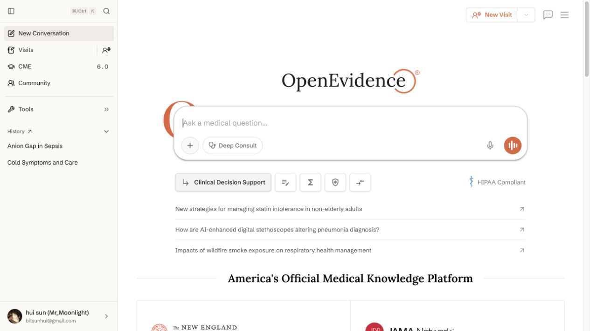
产品功能地图
医学问答与决策支持
标准问答、Deep Consult、指南、药物安全、Paperwork、计算器、附件、语音、随访问题。
就诊与文书工作流
录音/转录、Pre-chart、SOAP/AVS 模板、患者上下文、计费编码、历史、排程与团队。
可复用工具生态
Calculators、Collections、Clinical Trials、Dotflows、Messaging、Fax。
证据呈现层
指南卡片、许可图表、学会出版物、证据类型标签、EvidenceGrade、参考文献与来源摘要。
教育与成长
CME/CE、MOC、USMLE Prep、医学教育、动态生成练习题。
协作与患者触达
私密/公开分享、Collections、Care Teams、社区、Dialer、短信和传真。
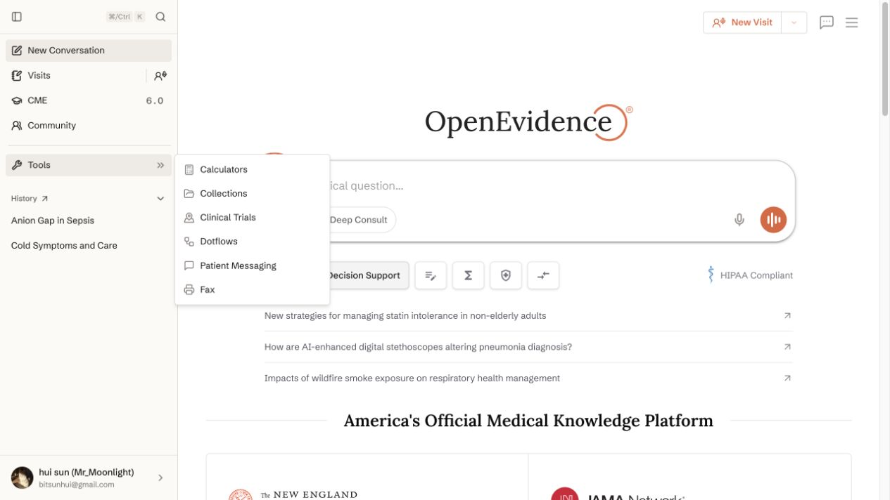
Ask：从一句问题到可核查的临床答案
输入层
- 文本问题与自然语言病例
- 录音输入与双向 Voice Mode
- PDF、图像、化验单等附件
- 患者选择后继承既往问题、Visit 与上下文
- 快捷建议题，降低空白页启动成本
任务模式
- Clinical Decision Support：默认综合问答
- Paperwork：先授权、保险申诉、患者材料
- Calculators：量表、评分、剂量与公式
- Guidelines：学会指南和更新摘要
- Drug Safety：相互作用、剂量、禁忌与不良反应
标准回答的组成
查询分析状态 → 证据检索 → 结论 → 指南/研究证据 → 可交互计算器或图表 → 关键不确定性 → 参考文献 → 推荐追问。
Deep Consult 的组成
较长的后台研究过程，最终生成分章节报告、比较表、量化证据、冲突证据、证据强度/局限、患者级建议与大规模参考文献。
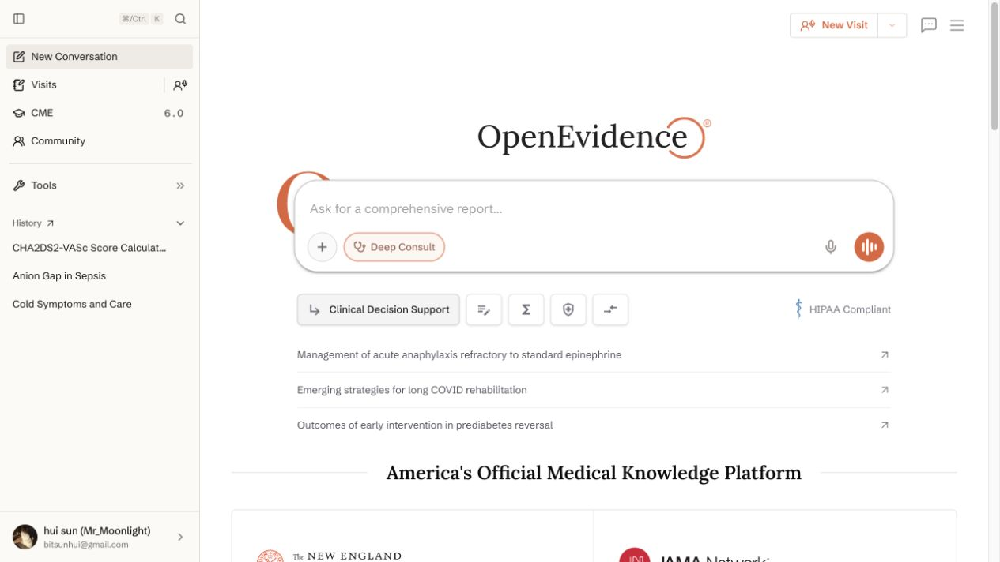
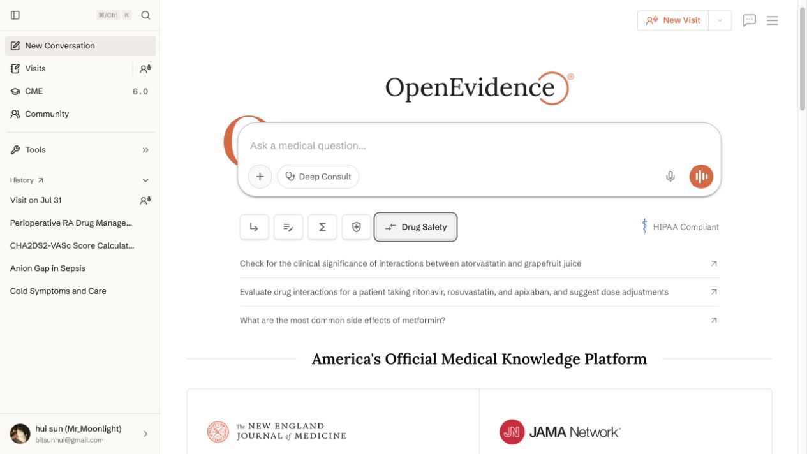
答案后的折叠与可选功能
内容操作
Helpful / Not helpful、复制文本、复制为图片、加入 Collection；表格支持 Export，图像支持全屏查看与反馈。
继续工作
推荐 Follow-up Questions；输入区 More options 可重新挂载附件或 Dotflow；可切换语音/录音。
证据下钻
References 可展开/折叠；单篇文献有 Summary；来源标注 Guideline、RCT、SR、Review、Opinion、Recent 等类型。
分享权限
默认 Private，可按人名/邮箱授权；Public 允许持链接者访问，并显著提示先确认没有 PHI 或敏感医疗信息。
EvidenceGrade™ 是什么？
Voice Mode 与普通录音有什么区别？
四个虚构案例，验证四种产品能力
案例 A：房颤患者抗凝评估
58 岁女性，非瓣膜性房颤、高血压，无卒中/TIA、糖尿病或血管病，肾功能正常。计算 CHA₂DS₂‑VASc，并解释是否考虑抗凝。
- 系统识别年龄、性别、高血压等变量，自动运行并展示可交互 CHA₂DS₂‑VASc 计算器。
- 得分 2；给出约 2.2% 缺血性卒中年风险和 2.9% 卒中/TIA/系统栓塞风险。
- 结合 2023 ACC/AHA/ACCP/HRS 指南说明女性性别是风险修饰因素；把患者归于中间风险，建议共同决策。
- 继续补充图表、关键不确定性、3+ 篇参考文献和来源标签。
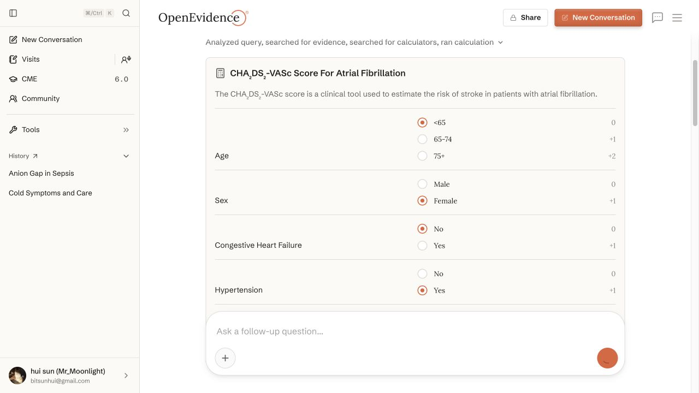
案例 B：RA 患者围手术期用药
62 岁 RA 女性，使用每周甲氨蝶呤和每两周阿达木单抗，计划全膝关节置换；要求分析停/启药、感染与复发权衡、肾损伤/活动性感染变化，以及证据局限。
- 后台先显示“Researching medical literature”，耗时明显长于标准模式。
- 报告分 8 节：范围、逐药建议、感染/复发权衡、肾功能、活动性感染、指南差异、证据局限、患者建议。
- 输出多张比较表：甲氨蝶呤继续；阿达木单抗按给药周期停用，最后一针后第 3 周手术，约术后 14 天且伤口愈合再启。
- 引用 ACR/AAHKS、澳大利亚指南、Cochrane、RCT、观察研究和 FDA 标签，共 30 条；主动指出“生物制剂无 RCT、Meta 分析结论冲突”等局限。
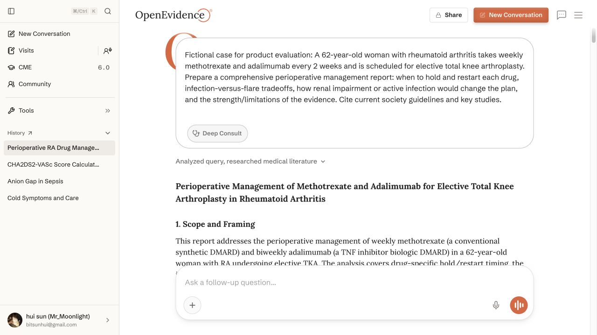
案例 C：Paxlovid 与心血管用药相互作用
68 岁房颤患者使用 apixaban 5 mg bid、atorvastatin 40 mg，CKD 3 期，拟用 nirmatrelvir/ritonavir。
- 把问题拆成 apixaban、atorvastatin 两个高价值相互作用和 Paxlovid 肾功能剂量。
- 解释 CYP3A4/P‑gp 机制；给出 apixaban 暂减至 2.5 mg bid、statin 暂停/降剂量等具体管理路径。
- 引用 JACC 综述、FDA 标签和房颤指南，并插入心血管药物相互作用图。
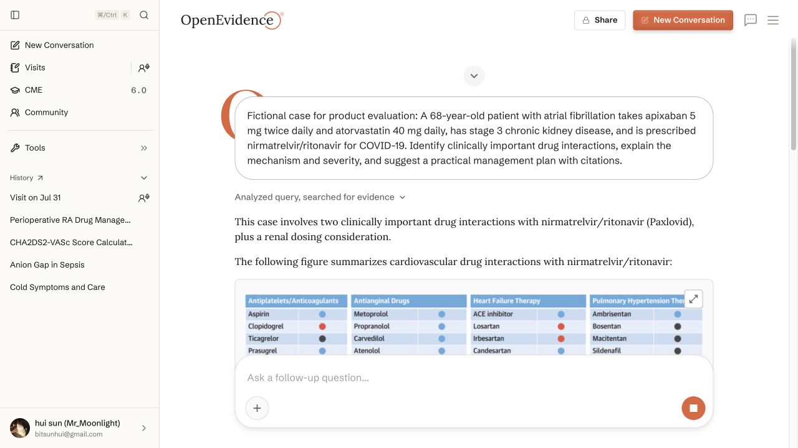
案例 D：加州转移性胰腺癌 Phase 3 试验
phase 3 trials for metastatic pancreatic cancer in California
- 检索过程显示数据库搜索、站点识别、过滤与排序进度。
- 返回 13 项；卡片展示匹配原因、招募状态、阶段、Sponsor 与更新时间。
- 同时提供 Sort、Filters、地图站点和详情入口；自然语言条件会被拆成疾病、阶段、位置。
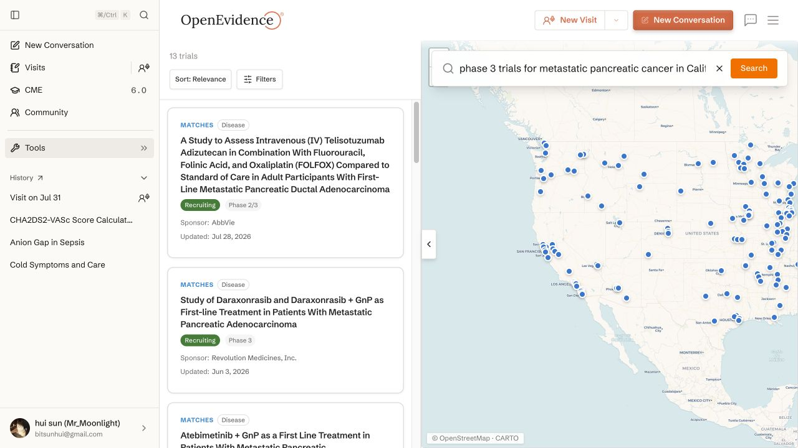
Visits：把“问证据”延伸到整次就诊
Visits 的核心对象不是对话，而是 Patient × Visit × Note。系统在同一屏完成采集、文书、证据问答、患者摘要和编码建议。
Visits Home
四个 Tab：Calendar、Patients、Templates、Visit History；另有 Visit settings。Patients 支持搜索、排序、置顶、网格/列表。
Patient 作为上下文容器
页面明确说明：在患者选中状态下发起的问题和 Visit 都能访问该患者的全部上下文，实现跨时间连续性。
模板系统
默认 SOAP、AVS、H&P、ED Note、Consult Note；富文本编辑器支持标题、列表、任务、表格。[] 是 AI 填充占位，@@...@@ 保留原文，() 写局部指令。
Voices
Specialty Focused、Detailed、Concise、Narrative 四种内置风格，也可 New Style。它控制生成文书的语气、颗粒度和筛选范围。
Visit 内置 Ask
能基于当前 Visit 询问“还有什么问题要问”“检查计划禁忌”“用证据增强计划”；History 保留本次就诊内问题。
Billing 与 AVS
文书完成后生成 E/M、CPT、ICD‑10 和 MDM 理由；AVS 以患者友好语言生成，可编辑、分享并有独立默认模板。
Care Teams
共享患者、Visits 与文档；Personal 空间仍私有。Clinician 可录音和签署，Care Coordinator 无需 NPI、负责外围流程，Owner/Admin 管权限并保留审计逻辑。
同意与远程医疗
开始采集前明确提示依法律取得录音同意/告知；Telehealth 是可选开关。录音/麦克风属于权限敏感动作。
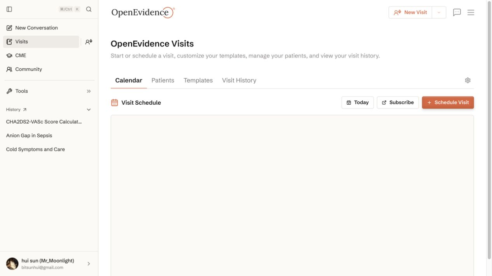
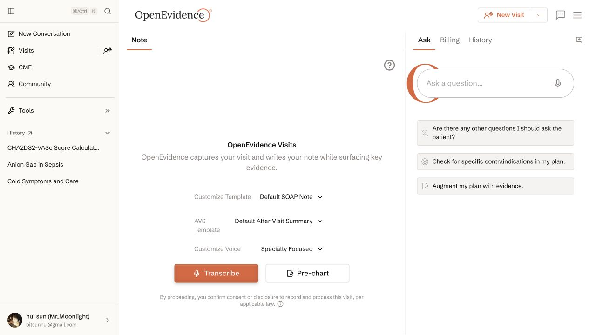
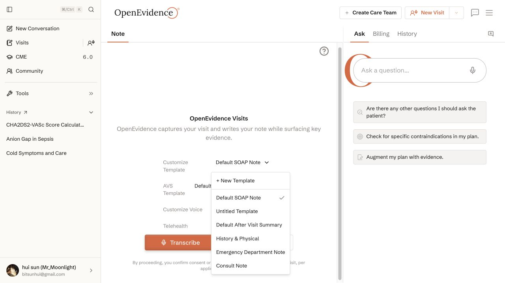
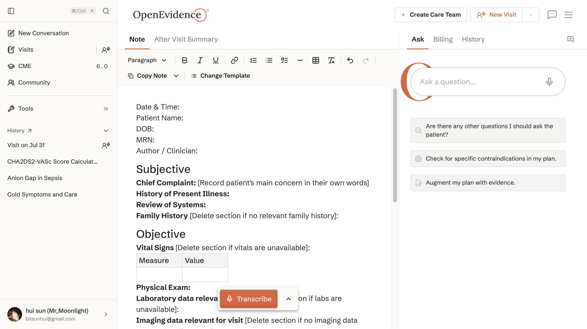
工具与扩展能力
Medical Calculators
目录显示 213 个计算器，支持搜索；计算器自身可交互，并提供“Ask OpenEvidence to interpret this”把结构化结果送入问答。
Collections
把问题归组；支持搜索、新建和在答案操作区直接加入。它是个人知识整理层，不改变原始对话。
Clinical Trials
自然语言解析 condition / phase / location，搜索美国活跃试验；提供卡片、地图、排序、筛选和详情。
Dotflows
类似 EHR dot phrase，但不是粘贴静态文本，而是把保存的自然语言指令送给模型；输入 . 触发，也可设为默认。
Patient Messaging / Dialer
移动端用医院/诊所号码呼叫，Web/移动端发送短信并可允许回复；隐藏个人号码。首次使用需接受 Telehealth Policy 并完成 opt-in。
Fax
专属 OpenEvidence 传真号码，可上传、扫描或拍照发送并收件；同属 Dialer opt-in，未开通前停留在 Get started 门槛。
Dotflows 实测教程给出的四类用途
| 用途 | 产品解释 | 内置示例 |
|---|---|---|
| 结构化工作流 | 把反复发生的格式和步骤封装成指令 | .avs、.discharge、.prior_auth、.fmla |
| 调整回答风格 | 表格、要点、简洁或详细 | .succinct |
| 添加临床上下文 | 儿科、住院、初级保健等人群/场景 | .patient_context_pediatrics |
| Visits 内处理 | 询问患者、重排或润色文书 | 当前 Visit 上下文 + Dotflow |
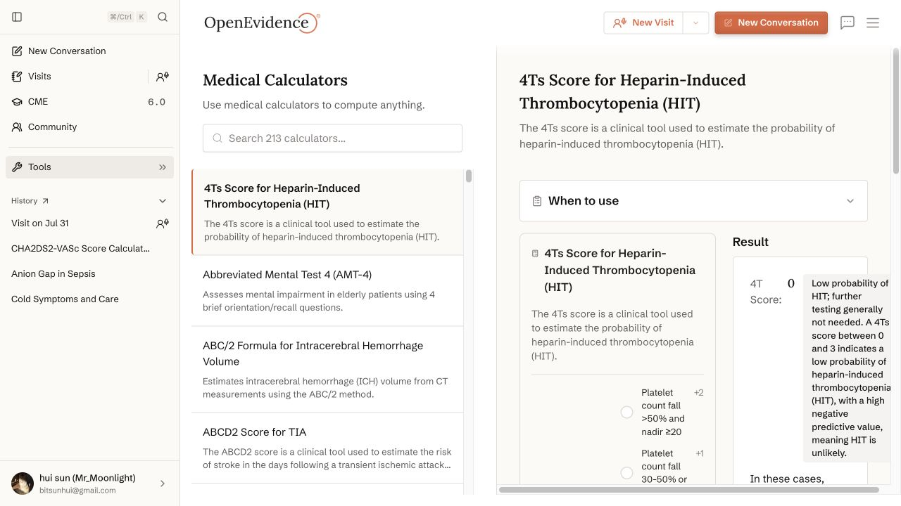
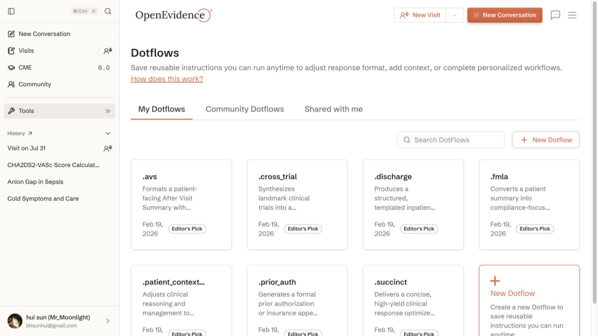
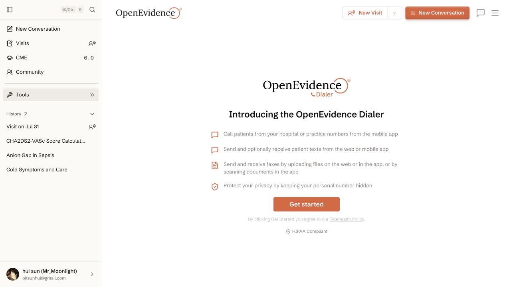
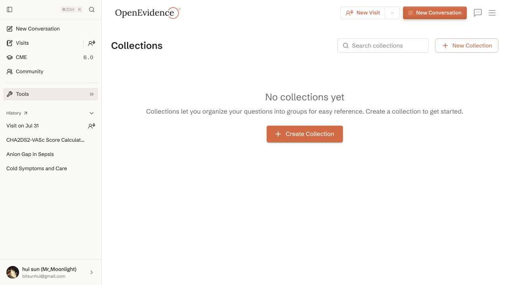
知识管理、教育与社区
History
侧栏展示最近条目，完整页支持搜索、批量选择、打开与 Conversation actions。历史同时收纳 Ask 和 Visit 类型。
CME / CE / MOC
根据过去问题生成 0.5 credit 的 board topics；支持 Available/Claimed、年份、Transcript 下载、学员档案、Accreditation 和 Review/Claim 流程。
USMLE Prep（Beta）
创建 Study Session，选择 Step 1 / Step 2 CK / Step 3、Main Topic 和 Subtopic，动态生成练习题。
Community
需先建医生资料：显示名、Credentials、Specialty、头像、简介；可配置“允许别人消息”和“邮件通知”。资料完成后才能被搜索和协作。
Inbox Management
官方用例覆盖化验结果回复和患者消息草拟；结合 Open inbox、Messaging 与患者上下文，形成临床收件箱处理场景。
User Guide / What’s New
指南将 Ask、Visits、Dialer 分域；更新记录显示 Dotflows、Coding Intelligence、Voices、Messages、Fax 等近年功能。
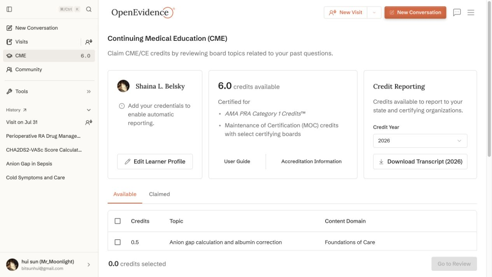
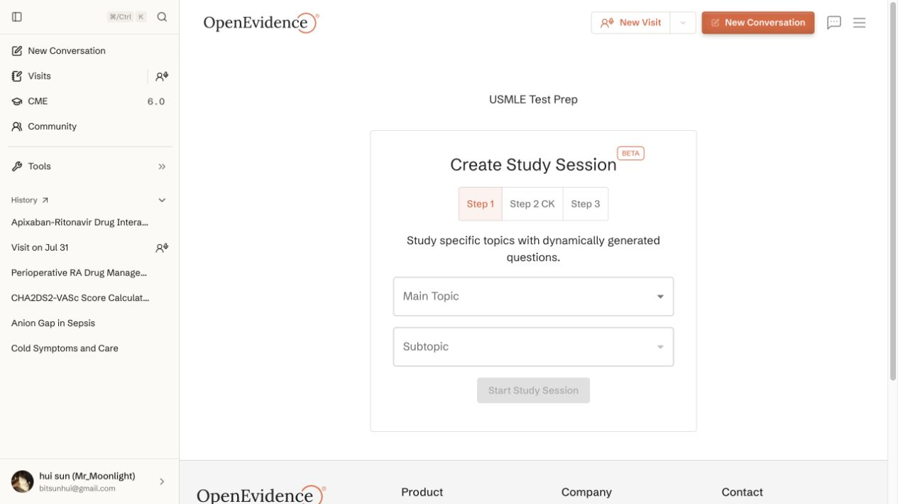
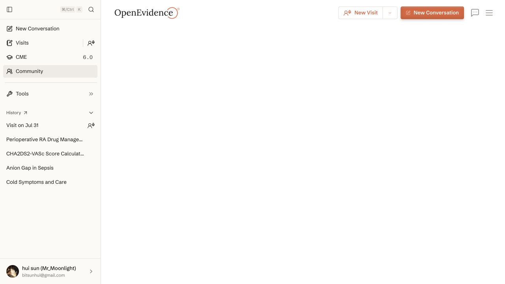
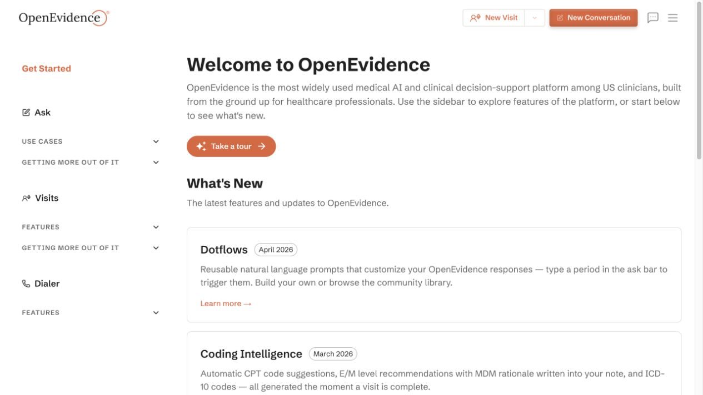
研发视角：一次任务怎样流经系统
1. “模式”更像路由提示，不是五个独立聊天机器人
同一输入框和回答框架不变，但推荐案例、工具优先级、答案结构发生改变；Drug Safety 会优先组织机制/严重度/管理，Paperwork 会优先输出文书。
2. 计算器是模型可调用工具
房颤案例证明模型能从自由文本抽取变量、回填计算器、展示可编辑状态，再引用结果进行指南解释。这是“LLM → tool → LLM”的闭环。
3. Deep Consult 是异步研究管线
先进入独立“Researching medical literature”状态，完成后一次性呈现分节报告和大量来源；与标准流式回答的耗时、规模和证据审计深度不同。
4. Patient 与 Visit 是长周期状态
对话是短周期任务；患者保存跨对话上下文，Visit 聚合某次就诊的录音、Note、AVS、编码和问答。团队则在此之上增加共享边界和角色。
5. 输出组件是结构化的
答案里的表格、图、学会材料、引用、来源类型、按钮都不是纯 Markdown 文本，而是可交互 UI 组件，便于导出、下钻和反馈。
6. 教育与增长复用同一数据
历史问题被转成 CME 主题；社区 Dotflows 和 Visit 模板反过来降低任务输入成本，形成“使用 → 沉淀 → 复用 → 教育”的循环。
功能矩阵：入口、作用与实测状态
| 分类 | 功能点 | 入口 | 实测结论 | 研发逻辑 |
|---|---|---|---|---|
| Ask | Clinical Decision Support | 主页默认模式 | 已生成指南型病例回答 | 通用临床任务路由 |
| Ask | Deep Consult | 输入框上方开关 | 完成 8 节、30 引用报告 | 异步深度检索/长报告 |
| Ask | Paperwork | 模式按钮 | 展示 prior auth、患者材料案例 | 文书模板 + 临床证据 |
| Ask | Guidelines | 模式按钮 | 按学会/年份提供推荐题 | 指南优先检索与摘要 |
| Ask | Drug Safety | 模式按钮 | 相互作用案例完成 | 药物知识图谱/标签 + 证据 |
| Ask | 附件 / Dotflows | More options | 折叠菜单可见 | 输入增强器 |
| Ask | 分享 | 回答页顶部 | Private / 指定人 / Public | 对象级 ACL + 公网链接 |
| Visits | Patient | Visits → Patients | 搜索/排序/视图/长期上下文 | 患者级上下文容器 |
| Visits | Templates | Visits → Templates | 6 个默认/自定义模板 | 富文本结构 + AI 占位语义 |
| Visits | Voice | New Visit | 4 内置风格 + New Style | 生成参数配置 |
| Visits | Billing | Visit 右侧 Tab | 完成 Note 后生成代码 | 文书 → 编码推断 |
| Visits | Care Teams | Visits / Guide | 角色、共享空间、权限说明已核对 | Team workspace + RBAC |
| Tools | Calculators | Tools / 首页模式 | 213 项；支持自动调用 | 结构化工具注册表 |
| Tools | Clinical Trials | Tools | 案例匹配 13 项 | NL 查询解析 + registry + 地图 |
| Tools | Dotflows | Tools / 输入“.” | 7 个 Editor's Pick 示例 | 可复用提示对象 |
| Tools | Collections | Tools / 回答操作 | 创建、搜索、收纳 | 用户知识整理对象 |
| Dialer | Calls / Messages / Fax | Tools / 移动端 | 功能介绍与 opt-in 门槛已确认 | 通信服务 + 专属号码 + 合规同意 |
| Learn | CME / USMLE | 侧栏 / 全局菜单 | 6.0 credits；USMLE Beta | 历史问题再加工 + 动态题目 |
| Community | Provider profile | 侧栏 Community | 需完成身份/消息设置 | 专业身份与可发现性 |
隐私、同意与高风险动作边界
默认最小暴露
对话默认 Private。公开分享前明确提醒：任何拿到链接的人都能查看，必须先移除 PHI 和敏感医疗信息。
录音需要法律同意
Visit 页面在 Transcribe/Pre-chart 附近持续显示同意提示；麦克风授权、真实录音和患者信息处理都应由用户主动确认。
通信需要 opt-in
Messaging/Fax 的 Get started 会接受 Telehealth Policy 并可能开通专属号码，这是账户层外部能力，不应在探索阶段替用户点击。
角色与边界
Care Coordinator 可以支撑流程，但不能录制或签署临床文书；Clinician、Owner/Admin 拥有不同权限。
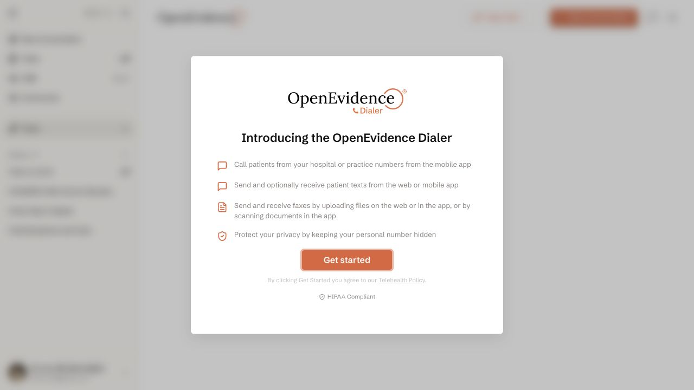
实测发现、未执行动作与使用建议
表现亮点
- 自由文本到计算器的自动工具调用自然、可核对
- 参考文献类型、指南卡片与许可图表非常丰富
- Deep Consult 会主动陈述证据冲突和局限
- 问答、Visit、CME、模板与团队形成闭环
需要留意
- Deep Consult 明显更慢，应提供进度、取消与后台完成通知
- 功能入口多，Tools、全局菜单、主页模式存在分散
- Community、Dialer/Fax 首次进入有独立 setup/opt-in
- CME Claimed 实测出现 1/1/1970 日期，可能是占位或数据异常，值得研发核查
新用户上手顺序
- 先用标准 Clinical Decision Support 问一个具体病例
- 展开 References 和 Summary 学会核查
- 再试 Calculator / Guideline / Drug Safety 模式
- 复杂争议问题才使用 Deep Consult
- 高频格式沉淀为 Dotflow；患者连续工作转入 Visits
本次没有实做的功能
真实录音/Voice Session、真实附件上传、短信/电话/传真、CME Claim、Community Complete Setup、Care Team 邀请、公开分享。这些动作会涉及权限、外部发送、身份展示或账户状态变化。